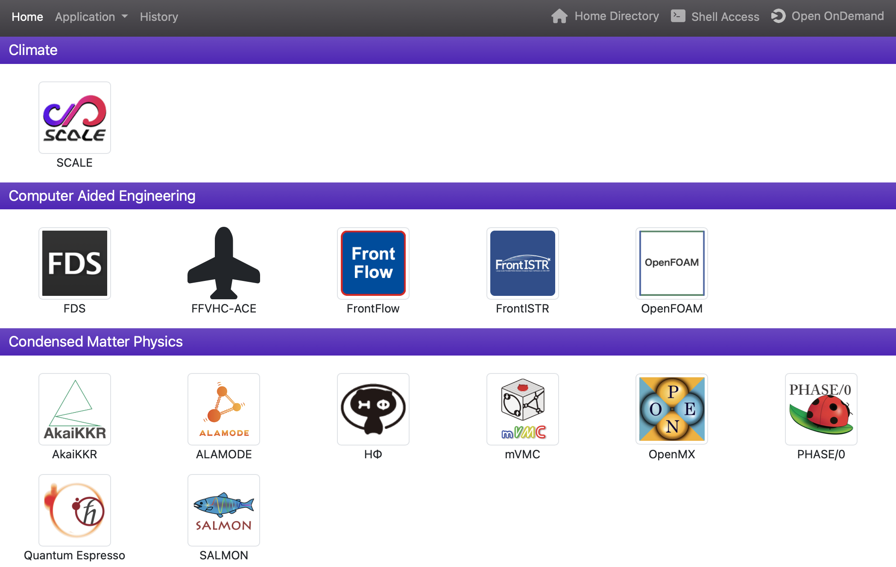
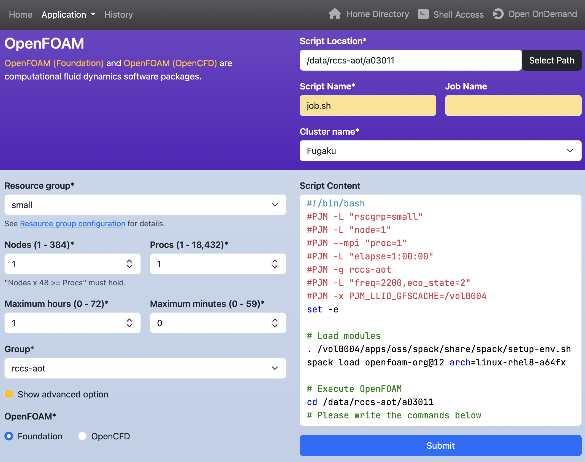
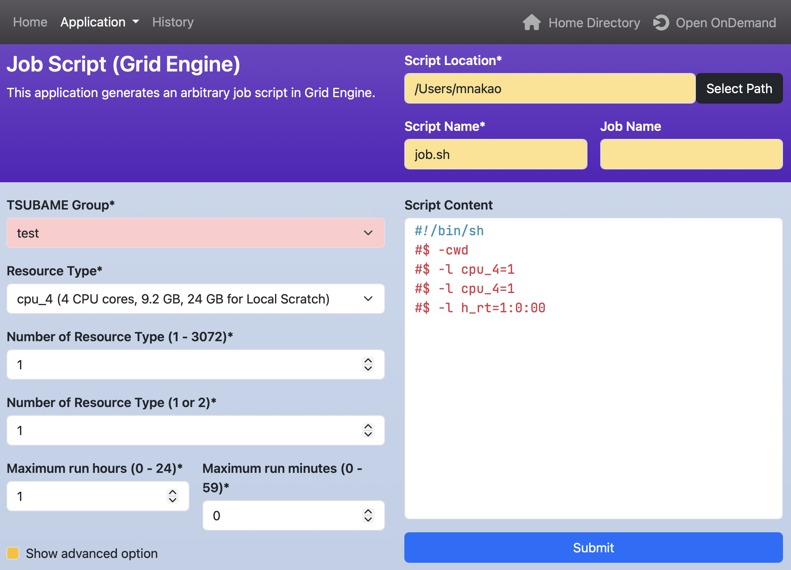
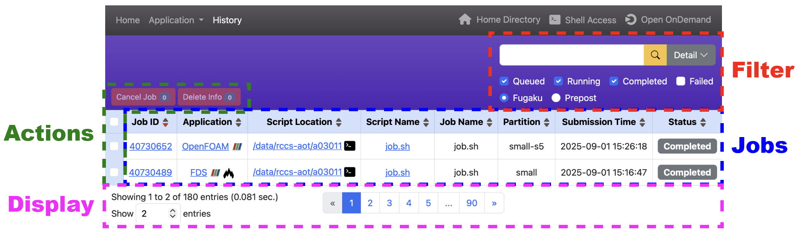
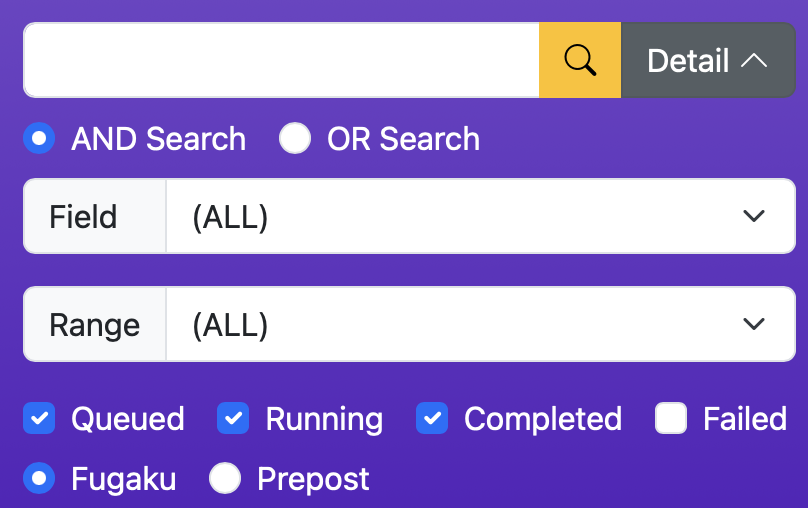
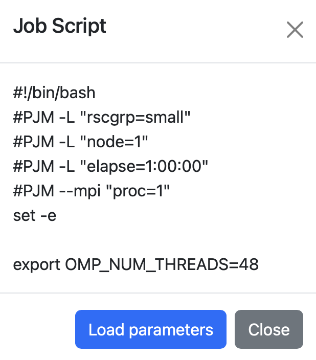

Open Composerユーザマニュアル
1. はじめに
Open ComposerはWebブラウザからHPCクラスタにバッチジョブを投入することができるWebアプリケーションです。Open Composerは「ホームページ」、「アプリケーションページ」、「履歴ページ」の3つのページから構成されています。
2. ホームページ
アプリケーションのアイコンがカテゴリ毎に表示されます。ナビゲーションバーの左側には、それぞれ「ホームページ」、「アプリケーションページ」、「履歴ページ」へのリンクがあります。ナビゲーションバーの右側には、それぞれOpen OnDemandの「Home Directory」、「Shell Access」、「ダッシュボード」へのリンクがあります。ただし、「Shell Access」はconf.yml.erbでlogin_nodeが設定されている場合のみ表示されます。

3. アプリケーションページ
ジョブスクリプトを生成します。ページ左のWebフォームに値を入力すると、ページ右のテキストエリアにジョブスクリプトが動的に生成されます。テキストエリアは自由に編集できます。テキストエリアの下の「Submit」ボタンをクリックすると、生成されたジョブスクリプトがHPCクラスタに投入されます。

- ヘッダの「Script location」と「Script name」と「Job name」は、それぞれ「ジョブスクリプトの保存先ディレクトリ」と「ジョブスクリプトのファイル名」と「ジョブ名」を記述します。
- ヘッダの「Cluster name」は複数のジョブスケジューラを設定している場合のみ表示されます。選択されたクラスタにジョブスクリプトが投入されます。
- Webフォームのラベルにアスタリスクがある場合、それは必須項目であることを表します。
- Webフォームの背景色が黄色は、ジョブスクリプトおよびジョブ投入前の処理を行うスクリプトを変更しないことを示します。
- Webフォームの背景色がピンクは、ジョブ投入前の処理を行うスクリプトのみを変更することを示します。そのスクリプトを手動で変更した後に、これらのWebフォームを変更しようとすると、上記と同様の警告が表示されます。

4. 履歴ページ
これまでのジョブ履歴を閲覧できます。また、ジョブの実行状況の確認や実行中のジョブの停止が可能です。Filter、Jobs、Actions、Displayの4つの区画があります。

- Filter
- ジョブ履歴を条件で絞り込み、目的のジョブを検索するための機能です。
- 入力欄に文字を入力してEnterキーを押すと、その文字とテーブル内の内容が一致するジョブが表示されます。
- 「Detail」ボタンをクリックすると、「AND/OR検索」、「特定項目に限定した検索」、「時間範囲の指定」といった、より詳細な条件での検索が可能です。

- ジョブの状態を表す「Queued」「Running」「Completed」「Failed」のチェックボックスにより、ジョブの状態でジョブの一覧を絞り込むことができます。
- 複数のジョブスケジューラを設定している場合、ジョブの状態のチェックボックスの下にラジオボタンが表示され、選択したスケジューラのジョブのみを表示できます（図では「Fugaku」と「Prepost」と表示されていますが、表示名は設定によります）。
- Jobs
- ジョブの一覧を表示する領域です。
- テーブルのヘッダにある▲と▼をクリックすると、その列をキーとしてテーブル全体が昇順または降順に並び替えられます。デフォルトはJob IDの降順です。
- 「Job ID」の項目のリンクをクリックすると、ジョブの詳細情報が表示されます。
- 「Application」の項目のリンクをクリックすると、該当アプリケーションのページが開きます。アプリケーション名の横にアイコンがある場合は、Open OnDemandのアプリケーションページを直接開きます。
- 「Script Location」の項目のリンクをクリックすると、Open OnDemandのHome Directoryが開きます。また、ターミナルアイコンをクリックすると、Terminalアプリケーションが起動します。
- 「Script Name」の項目のリンクをクリックすると、実行したジョブスクリプトが表示されます。「Load parameters」をクリックすると、そのジョブスクリプトを作成するために用いられたパラメータがロードされた状態でアプリケーションページが開きます。

- Actions
- 選択したジョブに対して操作を実行するための機能です。
- テーブルの左側にあるチェックボックスで対象を選択し、「Cancel Job」をクリックすると、キューに登録されているジョブもしくは実行中のジョブをキャンセルできます。「Delete Info」をクリックすると、完了したジョブの情報をテーブルから削除できます。
- 複数のジョブを同時に選択して、一括で操作を実行することも可能です。
- テーブルの一番上のチェックボックスをチェックすると、そのページに表示されているすべてのジョブを選択できます。
- Display
- 表示件数やページ送りなど、一覧の表示方法を制御する機能です。
- 画面下部には、現在表示している件数、全体件数、テーブル作成に要した時間が表示されます。
- 「Show entries」に数字を入力し、Enterキーを押すと、1ページあたりに表示する件数を変更できます。
- ページ番号をクリックすることで表示するページを切り替えることができます。